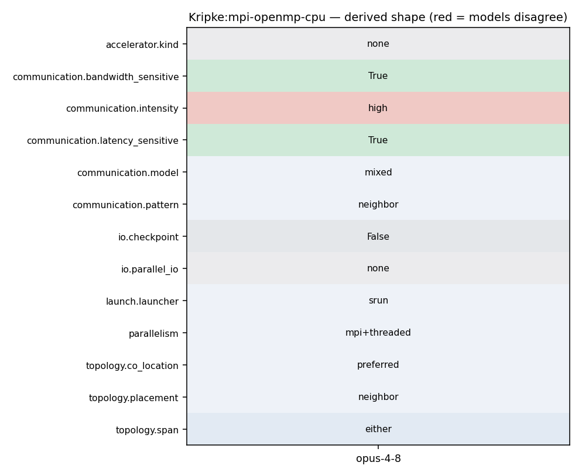

srun ... kripke --procs npx,npy,npz --arch OpenMP (OMP_NUM_THREADS set)
75 # Default Arch and Layout selection 76 # Sequential by default, but will be overriden if OpenMP or CUDA are enabled 77 # 78 set(KRIPKE_ARCH "Sequential") 79 set(KRIPKE_LAYOUT DGZ) 80 81
247 } 248 249 // Post the send 250 MPI_Isend(src_buffer, plane_data_size, MPI_DOUBLE, downwind_rank, 251 *downwind_sdom, MPI_COMM_WORLD, &send_requests[send_requests.size()-1]); 252 253 #else
133 RAJA_INLINE 134 #ifdef KRIPKE_USE_MPI 135 void allReduceSumLong(long *value, size_t len) const { 136 MPI_Allreduce(MPI_IN_PLACE, value, len, MPI_LONG, MPI_SUM, m_comm); 137 } 138 #else 139 void allReduceSumLong(long *, size_t ) const {}
35 comm = new BlockJacobiComm(data_store); 36 } 37 else { 38 comm = new SweepComm(data_store); 39 } 40 41 // Add all subdomains in our list
260 261 262 // Checks if there are any outstanding subdomains to complete 263 bool ParallelComm::workRemaining(void){ 264 #ifdef KRIPKE_USE_MPI 265 return (recv_requests.size() > 0 || queue_sdom_ids.size() > 0); 266 #else
171 GlobalSdomId global_sdom_id = local_to_global(sdom_id); 172 173 // Post the recieve 174 MPI_Irecv(plane_data_ptr, plane_data_size, MPI_DOUBLE, upwind_rank, 175 *global_sdom_id, MPI_COMM_WORLD, &recv_requests[recv_requests.size()-1]); 176 177 // increment number of dependencies
35 comm = new BlockJacobiComm(data_store); 36 } 37 else { 38 comm = new SweepComm(data_store); 39 } 40 41 // Add all subdomains in our list
171 GlobalSdomId global_sdom_id = local_to_global(sdom_id); 172 173 // Post the recieve 174 MPI_Irecv(plane_data_ptr, plane_data_size, MPI_DOUBLE, upwind_rank, 175 *global_sdom_id, MPI_COMM_WORLD, &recv_requests[recv_requests.size()-1]); 176 177 // increment number of dependencies
247 } 248 249 // Post the send 250 MPI_Isend(src_buffer, plane_data_size, MPI_DOUBLE, downwind_rank, 251 *downwind_sdom, MPI_COMM_WORLD, &send_requests[send_requests.size()-1]); 252 253 #else
121 RAJA_INLINE 122 long allReduceSumLong(long value) const { 123 #ifdef KRIPKE_USE_MPI 124 MPI_Allreduce(MPI_IN_PLACE, &value, 1, MPI_LONG, MPI_SUM, m_comm); 125 #endif 126 return value; 127 }
131 auto local_to_global = data_store.getVariable<Field_SdomId2GlobalSdomId>("SdomId2GlobalSdomId").getView(SdomId{0}); 132 #endif 133 134 // go thru each dimensions upwind neighbors, and add the dependencies 135 int num_depends = 0; 136 for(Dimension dim{0};dim < 3;++ dim){ 137
171 GlobalSdomId global_sdom_id = local_to_global(sdom_id); 172 173 // Post the recieve 174 MPI_Irecv(plane_data_ptr, plane_data_size, MPI_DOUBLE, upwind_rank, 175 *global_sdom_id, MPI_COMM_WORLD, &recv_requests[recv_requests.size()-1]); 176 177 // increment number of dependencies
247 } 248 249 // Post the send 250 MPI_Isend(src_buffer, plane_data_size, MPI_DOUBLE, downwind_rank, 251 *downwind_sdom, MPI_COMM_WORLD, &send_requests[send_requests.size()-1]); 252 253 #else
44 InputVariables def; 45 46 // Display command line 47 printf("Usage: [srun ...] kripke [options...]\n\n"); 48 49 // Display each option 50 printf("Problem Size Options:\n");
44 InputVariables def; 45 46 // Display command line 47 printf("Usage: [srun ...] kripke [options...]\n\n"); 48 49 // Display each option 50 printf("Problem Size Options:\n");
44 InputVariables def; 45 46 // Display command line 47 printf("Usage: [srun ...] kripke [options...]\n\n"); 48 49 // Display each option 50 printf("Problem Size Options:\n");
85 - echo ${ALLOC_NAME} 86 - export JOBID=$(squeue -h --name=${ALLOC_NAME} --format=%A) 87 - echo ${JOBID} 88 - srun $( [[ -n "${JOBID}" ]] && echo "--jobid=${JOBID}" ) -t 15 -N 1 scripts/gitlab/build_and_test.sh 89 artifacts: 90 reports: 91 junit: junit.xml
30 #ifdef KRIPKE_USE_MPI 31 RAJA_INLINE 32 static void init(int *argc, char ***argv){ 33 MPI_Init(argc, argv); 34 } 35 #else 36 RAJA_INLINE
175 Environment Variables 176 -------------------- 177 178 If Kripke is built with OpenMP support, then the environment variable ``OMP_NUM_THREADS`` is used to control the number of OpenMP threads. Kripke does not attempt to modify the OpenMP runtime in any way, so other ``OMP_*`` environment variables should also work as well. 179 180 If Kripke is built with Caliper support, Caliper performance measurements can be configured through Caliper environment variables. For example, 181
16 set(CMAKE_CXX_FLAGS_RELWITHDEBINFO "-O3 -g" CACHE STRING "") 17 set(CMAKE_CXX_FLAGS_DEBUG "-O0 -g" CACHE STRING "") 18 19 set(ENABLE_OPENMP On CACHE BOOL "") 20 set(ENABLE_MPI On CACHE BOOL "") 21 22
171 GlobalSdomId global_sdom_id = local_to_global(sdom_id); 172 173 // Post the recieve 174 MPI_Irecv(plane_data_ptr, plane_data_size, MPI_DOUBLE, upwind_rank, 175 *global_sdom_id, MPI_COMM_WORLD, &recv_requests[recv_requests.size()-1]); 176 177 // increment number of dependencies
131 auto local_to_global = data_store.getVariable<Field_SdomId2GlobalSdomId>("SdomId2GlobalSdomId").getView(SdomId{0}); 132 #endif 133 134 // go thru each dimensions upwind neighbors, and add the dependencies 135 int num_depends = 0; 136 for(Dimension dim{0};dim < 3;++ dim){ 137
239 240 * **``--procs <npx,npy,npz>``** 241 242 Number of MPI ranks in each spatial dimension. (Default: --procs 1,1,1) 243 244 * **``--dset <ds>``** 245
24 25 al_v(ArchLayoutV{KRIPKE_ARCHV_DEFAULT, KRIPKE_LAYOUTV_DEFAULT}), 26 27 npx(1), npy(1), npz(1), 28 num_dirsets(8), 29 num_groupsets(2), 30